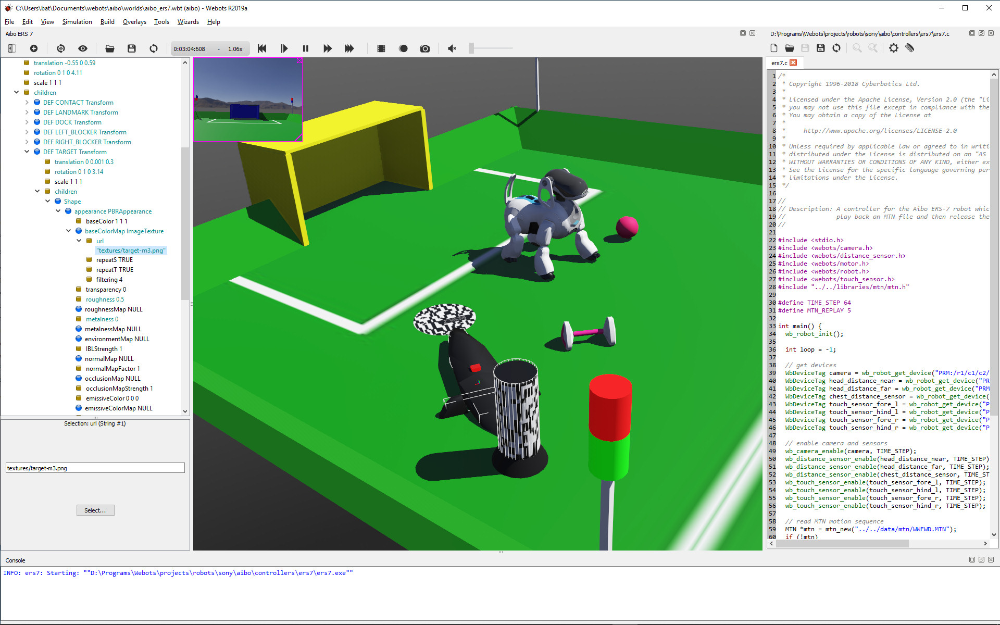

Webots

- 官方网站：https://cyberbotics.com/
- GitHub：https://github.com/cyberbotics/webots
- 物理引擎：基于ODE改进
- 许可：Apache 2.0 开源
引言
Webots是一款功能完善的开源机器人仿真平台，最初由瑞士洛桑联邦理工学院 (EPFL, Ecole Polytechnique Federale de Lausanne) 开发，后由Cyberbotics公司进行商业化运营。2018年，Webots从商业许可转换为Apache 2.0开源模式，此后在机器人教育和研究领域获得了越来越广泛的关注。
发展历程
- 1996年：Webots由EPFL的Olivier Michel在其博士研究期间首次开发，最初用于进化机器人学 (Evolutionary Robotics) 的研究
- 1998年：Cyberbotics公司成立，开始Webots的商业化运营
- 2018年12月：Webots R2019a版本正式以Apache 2.0许可证开源，所有功能免费提供
- 后续发展：开源后社区贡献活跃，持续增加新的机器人模型和功能
核心特性
Webots提供了一个完整的机器人开发环境，核心特性包括：
- 集成开发环境 (IDE)：内置代码编辑器、场景树 (Scene Tree) 编辑器和三维视图
- 物理仿真：基于ODE (Open Dynamics Engine) 的改进版物理引擎，支持刚体动力学、碰撞检测和摩擦模型
- 高质量渲染：使用WREN渲染引擎，支持阴影 (Shadow)、反射 (Reflection) 和纹理映射 (Texture Mapping)
- 流体力学：支持水中机器人的浮力 (Buoyancy) 和阻力 (Drag) 仿真
- 天气效果：可以模拟雾、雨等天气条件对传感器的影响
内置机器人模型
Webots提供了大量预置的机器人模型，涵盖多个领域：
- 移动机器人：e-puck、Pioneer 3-DX、TIAGo、Thymio II
- 工业机械臂：Universal Robots (UR3/UR5/UR10)、KUKA youBot、ABB IRB系列
- 人形机器人：NAO、Darwin-OP、Robotis OP2
- 无人机：Mavic 2 Pro、Crazyflie
- 自动驾驶车辆：Tesla Model 3、BMW X5、Lincoln MKZ等车辆模型
- 其他：Boston Dynamics Spot、Softbank Pepper
编程语言支持
Webots的控制器 (Controller) 程序支持多种编程语言：
- C/C++：提供原生API，性能最优
- Python：使用广泛，适合快速原型开发
- Java：面向对象的API设计
- MATLAB：适合控制算法的研究和验证
- ROS/ROS 2：通过
webots_ros2包实现与ROS 2的深度集成
控制器编程 (Controller Programming)
Webots中每个机器人运行独立的控制器进程。控制器程序通过Webots API与仿真环境交互，读取传感器数据、发送执行器指令。以Python控制器为例：
from controller import Robot
robot = Robot()
timestep = int(robot.getBasicTimeStep())
# 获取传感器和电机
ds_left = robot.getDevice('ds_left')
ds_left.enable(timestep)
motor_left = robot.getDevice('motor_left')
while robot.step(timestep) != -1:
distance = ds_left.getValue()
if distance < 100:
motor_left.setVelocity(0.0)
else:
motor_left.setVelocity(5.0)
这种架构使得控制器代码与仿真引擎解耦 (Decoupled)，便于将仿真中验证的算法迁移到真实硬件上。
与ROS 2的集成
Webots通过 webots_ros2 功能包提供了与ROS 2的原生集成，支持：
- 将Webots传感器数据发布为ROS 2话题 (Topic)
- 通过ROS 2服务 (Service) 控制仿真的运行状态
- 使用标准ROS 2工具 (如RViz2、Nav2) 与Webots仿真环境交互
- 支持自定义ROS 2插件扩展接口功能
教育与竞赛应用
Webots在机器人教育领域具有显著优势：
- 内置丰富的教程 (Tutorial) 和示例项目
- 界面友好，学习曲线平缓，适合初学者入门
- 支持RoboCup仿真赛事，多次作为官方仿真平台
- 跨平台支持 (Windows、Linux、macOS)，便于教学部署
- 提供在线仿真版本 (Webots Cloud)，无需本地安装即可运行
优势与局限
优势：
- 完全开源免费，社区活跃
- 自带大量机器人模型和传感器，开箱即用
- 集成开发环境易用性强
- 与ROS 2集成良好
局限：
- 物理引擎精度在某些极端场景下不如MuJoCo
- 渲染质量与游戏引擎相比仍有差距
- 社区规模和生态资源不及Gazebo
世界编辑器（World Editor）
Webots 的图形界面提供了直观的场景树编辑器（Scene Tree Editor），可以拖放方式构建仿真场景：
- WorldInfo 节点：设置物理参数（重力、时间步长）、坐标系和随机种子
- Viewpoint 节点：配置初始摄像机视角
- Light 节点：添加方向光（DirectionalLight）、点光源（PointLight）、聚光灯（SpotLight）
- DEF/USE 机制：定义可复用的节点，减少场景文件冗余
- Proto 机制：将复杂场景节点封装为参数化原型，类似统一机器人描述格式（URDF, Unified Robot Description Format）的 xacro
场景文件以 .wbt 格式保存，本质上是一种基于节点树的文本格式，可以手动编辑。原型文件以 .proto 格式保存，允许用户定义带参数的可复用组件。例如，一个自定义轮式机器人 Proto 可以暴露轮距、轮径等参数，方便在不同场景中复用。
Python 控制器编写
Webots 支持 Python、C、C++、Java、ROS、MATLAB 等多种控制器语言。以下是 Python 控制器示例：
基础控制器结构
from controller import Robot, Motor, DistanceSensor
# 获取机器人实例
robot = Robot()
timestep = int(robot.getBasicTimeStep()) # 通常 32ms 或 64ms
# 获取电机设备
left_motor = robot.getDevice('left wheel motor')
right_motor = robot.getDevice('right wheel motor')
left_motor.setPosition(float('inf')) # 速度模式（无限位置）
right_motor.setPosition(float('inf'))
left_motor.setVelocity(0)
right_motor.setVelocity(0)
# 获取距离传感器
ds_left = robot.getDevice('ds_left')
ds_right = robot.getDevice('ds_right')
ds_left.enable(timestep)
ds_right.enable(timestep)
MAX_SPEED = 6.28 # 弧度/秒
# 主控制循环
while robot.step(timestep) != -1:
# 读取传感器
left_dist = ds_left.getValue()
right_dist = ds_right.getValue()
# 简单避障控制
left_speed = MAX_SPEED
right_speed = MAX_SPEED
if left_dist < 1000: # 左侧有障碍
left_speed = -MAX_SPEED
if right_dist < 1000: # 右侧有障碍
right_speed = -MAX_SPEED
left_motor.setVelocity(left_speed)
right_motor.setVelocity(right_speed)
常用传感器 API
from controller import Camera, Lidar, InertialUnit, GPS
# 相机
camera = robot.getDevice('camera')
camera.enable(timestep)
image = camera.getImage() # 返回 BGRA 字节串
width, height = camera.getWidth(), camera.getHeight()
# 激光雷达
lidar = robot.getDevice('lidar')
lidar.enable(timestep)
lidar.enablePointCloud()
ranges = lidar.getRangeImage() # 距离数组
point_cloud = lidar.getPointCloud() # 三维点云
# 惯性测量单元（IMU, Inertial Measurement Unit）
imu = robot.getDevice('inertial unit')
imu.enable(timestep)
roll, pitch, yaw = imu.getRollPitchYaw()
# 全球定位系统（GPS, Global Positioning System）
gps = robot.getDevice('gps')
gps.enable(timestep)
x, y, z = gps.getValues()
# 编码器（位置传感器）
encoder = robot.getDevice('left wheel sensor')
encoder.enable(timestep)
position = encoder.getValue() # 弧度
机器人运动学控制（机械臂示例）
from controller import Robot, Motor, PositionSensor
robot = Robot()
timestep = int(robot.getBasicTimeStep())
# 获取 UR5e 的 6 个关节
joint_names = ['shoulder_pan', 'shoulder_lift', 'elbow',
'wrist_1', 'wrist_2', 'wrist_3']
motors = [robot.getDevice(f'{name}_joint') for name in joint_names]
sensors = [robot.getDevice(f'{name}_joint_sensor') for name in joint_names]
for s in sensors:
s.enable(timestep)
# 设置目标关节角度（弧度）
target_angles = [0.0, -1.57, 1.57, -1.57, -1.57, 0.0]
for motor, angle in zip(motors, target_angles):
motor.setPosition(angle)
while robot.step(timestep) != -1:
current = [s.getValue() for s in sensors]
# 检查是否到达目标
error = max(abs(c - t) for c, t in zip(current, target_angles))
if error < 0.01:
print("已到达目标位置")
break
与 ROS 2 集成（webots_ros2）
webots_ros2 是 Webots 官方提供的 ROS 2 集成包，将 Webots 设备自动映射为 ROS 2 话题和服务。
安装
sudo apt install ros-humble-webots-ros2
启动配置
# launch/robot.launch.py
import os
from launch import LaunchDescription
from launch.actions import DeclareLaunchArgument
from launch_ros.actions import Node
from webots_ros2_driver.webots_launcher import WebotsLauncher
from ament_index_python.packages import get_package_share_directory
def generate_launch_description():
pkg_dir = get_package_share_directory('my_robot_pkg')
webots = WebotsLauncher(
world=os.path.join(pkg_dir, 'worlds', 'my_world.wbt')
)
robot_driver = Node(
package='webots_ros2_driver',
executable='driver',
output='screen',
parameters=[{
'robot_description': open(os.path.join(pkg_dir, 'resource', 'robot.urdf')).read()
}],
)
return LaunchDescription([webots, robot_driver])
话题映射示例
| Webots 设备 | ROS 2 话题 | 消息类型 |
|---|---|---|
| Camera | /camera/image_color |
sensor_msgs/Image |
| Lidar | /scan |
sensor_msgs/LaserScan |
| InertialUnit | /imu |
sensor_msgs/Imu |
| GPS | /gps |
sensor_msgs/NavSatFix |
| DifferentialWheels | /cmd_vel 订阅 |
geometry_msgs/Twist |
多机器人场景
Webots 原生支持在同一场景中运行多个机器人，每个机器人有独立的控制器进程：
# 多机器人场景：通过机器人名称区分
robot = Robot()
robot_name = robot.getName() # 例如 "robot_1", "robot_2"
# 根据名称设置不同初始位置或策略
if robot_name == "robot_1":
target = [1.0, 0.0, 0.0]
elif robot_name == "robot_2":
target = [-1.0, 0.0, 0.0]
在 ROS 2 场景下，多机器人通过命名空间（Namespace）区分话题：
/robot_1/scan、/robot_1/cmd_vel/robot_2/scan、/robot_2/cmd_vel
与教育和竞赛的结合
Webots 在机器人竞赛和教育领域有广泛应用：
- RoboCup：官方提供基于 Webots 的标准平台组（Standard Platform League）仿真环境
- 世界机器人奥林匹克（WRO, World Robot Olympiad）：部分赛项使用 Webots 仿真预赛
- Cyberbotics 官方教程：提供从入门到高级的系统教程，涵盖感知、运动规划和强化学习
- 用于教学的预置环境：内置 e-puck 教学机器人和标准任务（迷宫探索、避障、线跟踪）
参考资料
- Webots官方文档
- Webots GitHub仓库
- webots_ros2文档
- Michel, O. (2004). Webots: Professional mobile robot simulation. International Journal of Advanced Robotic Systems, 1(1), 39-42.
- Webots 官方文档
- webots_ros2 GitHub
- Michel, O. (2004). WebotsTM: Professional Mobile Robot Simulation. Journal of Advanced Robotics Systems.